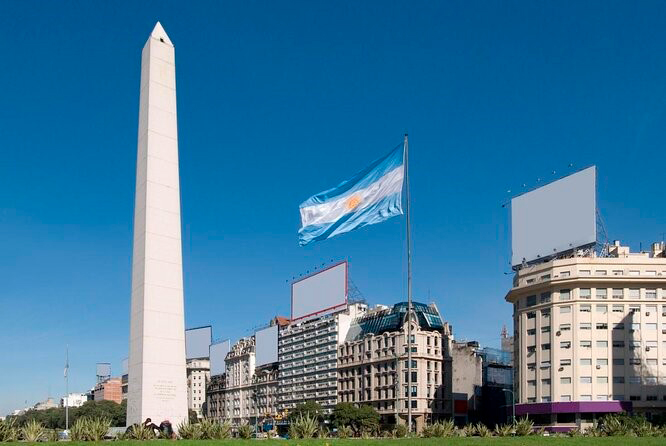
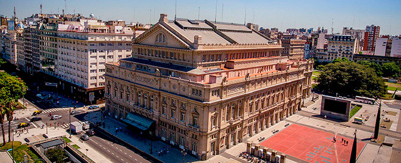
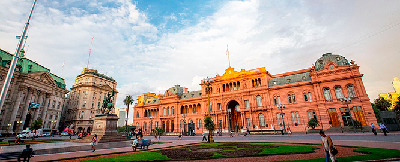
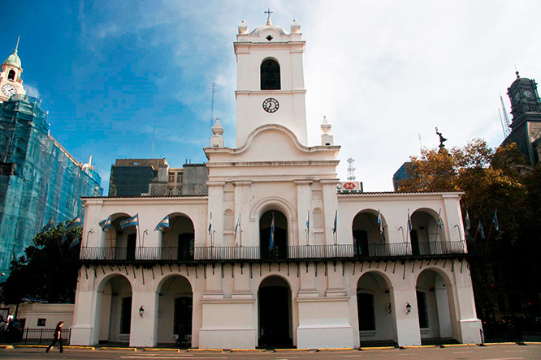
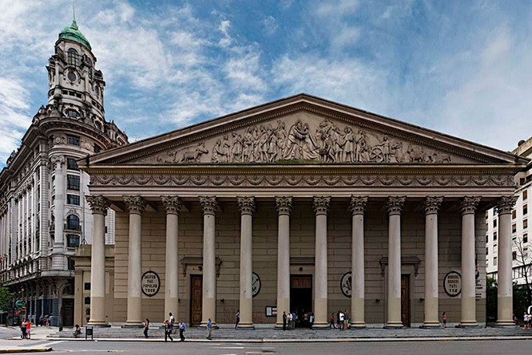
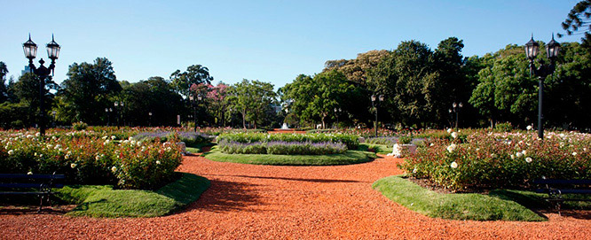
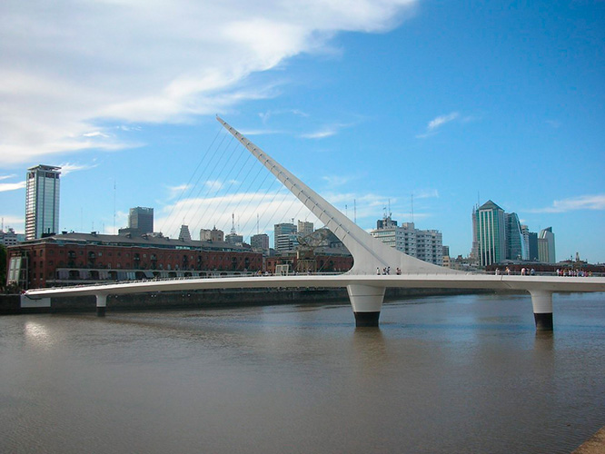
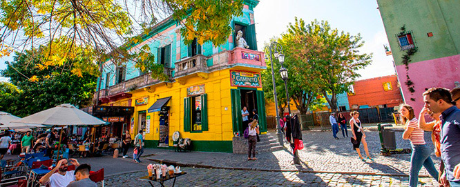

Atractivos para visitar
Obelisco
El Obelisco es, en todo el mundo, el mayor emblema de la ciudad y de sus habitantes, como lo pueden ser la Torre Eiffel en París o la Estatua de la Libertad en Nueva York. Inaugurado en 1936 para recordar el cuarto centenario de la primera fundación de Buenos Aires, es obra del arquitecto Alberto Prebisch, uno de los principales exponentes del modernismo argentino y autor también del vecino Teatro Gran Rex. Se ubica en el lugar donde fue izada por primera vez la bandera nacional en la ciudad. Quien visita Buenos Aires no puede dejar de fotografiar este monumento, ubicado estratégicamente en la intersección de dos de las avenidas más importantes: la 9 de Julio, entre las más anchas del mundo, y la “calle” Corrientes, uno de los principales polos culturales de la ciudad.
El Obelisco es, además, el eje del Metrobus, sistema de transporte de colectivos que cruza el Microcentro por la Avenida 9 de Julio, inaugurado en el año 2013. Con una altura total de 67,5 m y una base de 6,8 m por lado, el Obelisco posee una única puerta de entrada (mirando hacia la Avenida Corrientes en dirección oeste) , detrás de la cual hay una escalera marinera de 206 escalones con 7 descansos que lleva a la cúspide. Allí existe un mirador con cuatro ventanas, visibles desde la calle. Y por encima de ella, el monumento emblema de Buenos Aires culmina en un pararrayos que no logra divisarse a simple vista. Actualmente está prohibido el ingreso.
Teatro Colon
El Teatro Colón es uno de los imperdibles del mundo de la lírica y está a la altura de La Scala de Milán, la Ópera Garnier de París y el Royal Opera House de Londres.
Desde su primera función del 25 de mayo de 1908, en la que se presentó la ópera Aída, de Giuseppe Verdi, actuaron los directores, cantantes y bailarines más importantes de la historia, tales como Igor Stravinsky, Herbert von Karajan, Daniel Barenboim, Maria Callas, Luciano Pavarotti, Plácido Domingo, etc.
Su construcción duró casi 20 años e involucró a 1500 personas. Es obra de los arquitectos Francesco Tamburini, Victor Meano y Jules Dormal. Según los grandes directores de orquesta, el Colón es uno de los mejores teatros de su tipo porque la sala en herradura genera una distribución perfecta del sonido y los tres pisos de palcos, diseñados con materiales blandos como telas, maderas y alfombras, logran una óptima absorción. Además, en los pisos superiores, se utilizaron materiales duros como mármol y bronce para perfeccionar la reflexión de las ondas. Su cúpula fue decorada por el pintor argentino Raúl Soldi y ese trabajo le llevó 41 d.
En el año 2008, el Gobierno de la Ciudad inició una restauración en profundidad, con el objeto de devolverle todo su esplendor y, al mismo tiempo, dotarlo de los más importantes adelantos tecnológicos. Esta obra permitió que el Teatro Colón fuera re-inaugurado para el bicentenario de la Nación, en el año 2010. Actualmente, el edificio alberga además diferentes talleres donde se realizan las producciones de sus espectáculos, así como el Instituto Superior de Arte, reconocido en todo el mundo y donde se forman los futuros cantantes líricos y bailarines.
Casa de Gobierno o Casa Rosada
La Casa Rosada es un palacio ubicado frente a la Plaza de Mayo que funciona como sede del Gobierno Nacional. Este imponente edificio de color rosado ocupa el predio donde se erigió en 1580 el Fuerte de Buenos Aires. Fue la residencia de virreyes españoles y luego albergó, con algunas reformas, a las autoridades de los sucesivos gobiernos patrios. El actual edificio es el producto de la fusión de dos construcciones anteriores: la sede presidencial y el Palacio de Correos (en la esquina de Hipólito Yrigoyen y Balcarce).
El Palacio de Correos, contiguo al edificio, opacaba sensiblemente a la sede del gobierno, por lo que el presidente Julio Argentino Roca solicitó en 1882 un proyecto de ensanche y reparaciones que fusionara a ambos edificios. Para unirlos, el arquitecto italiano Francisco Tamburini (responsable del proyecto original del Teatro Colón) proyectó un gran arco central en la entrada de Balcarce 50, cuya construcción finalizó hacia 1890. Esto marcó el fin de lo que quedaba del antiguo Fuerte: solo se conservaron algunos muros y una de las troneras, que pueden verse en el actual Museo Casa Rosada.
El Cabildo
El Cabildo de Buenos Aires, sede de la administración colonial, ocupa el mismo lugar desde 1580, pero su edificio sufrió sucesivas modificaciones. Las primeras referencias del Cabildo provienen de principios del siglo XVII. Para 1608, tenía paredes de adobe y techo de paja. El interior se encontraba dividido en dos: un salón para reuniones y otro que funcionaba como cárcel. Las tejas llegaron dos años más tarde y, para mediados de siglo, el Cabildo tenía balcón y torres de madera y barro. Para 1725, el edificio estaba en muy mal estado y se decidió demolerlo. A cambio comenzó a levantarse uno nuevo, a partir de un proyecto del italiano Andrés Blanqui. Así, comenzaba a tomar forma el Cabildo tal como lo conocemos hoy.
En 1748 estuvo listo el primer piso y, en 1773 apareció la torre -algo más alta que la actual- cuya cúpula se cubría con un techo de lata. Ese fue el Cabildo de los patriotas de 1810 y esa fue su época de mayor esplendor. El Cabildo como institución fue derogado en 1821 y por casi 60 años funcionó como un edificio administrativo. En 1894 se suprimieron tres arcos del ala norte para dar paso a la Avenida de Mayo.
En 1931 se demolieron tres más del ala sur para el trazado de la Avenida Julio A. Roca. Hacia 1940, el arquitecto Mario Buschiazzo realizó la última reforma importante del edificio, que rescató, en parte, el diseño original de Blanqui. Desde 1938 el Cabildo alberga la Comisión Nacional de Museos y de Monumentos y Lugares Históricos, y el Museo Histórico Nacional del Cabildo de Buenos Aires y de la Revolución de Mayo.
Catedral Metropolitana
Ubicada frente a Plaza de Mayo, en la intersección de la calle San Martín y la avenida Rivadavia, la Catedral Metropolitana es la principal sede de la Iglesia Católica de la Argentina. Además de estar ubicada en una zona clave de la Ciudad de Buenos Aires, guarda una larga historia de sinsabores en su construcción. El edificio actual es la sexta construcción que se realizó en este lugar desde la segunda fundación de la Ciudad de Buenos Aires.
Rosedal de Palermo
Dentro del Parque 3 de Febrero, en Palermo, se encuentra el Rosedal, con una colección de más de 18.000 rosas y un lago que lo rodea. Ocupa un espacio que perteneció a la quinta de Juan Manuel de Rosas, hasta que él fue derrotado en la batalla de Caseros, en 1852. Quien comenzó la obra fue el paisajista Carlos Thays, el mismo que construyó el Jardín Botánico, el Parque Avellaneda y el Parque Lezama, entre otros. Luego, la terminó su discípulo, Benito Carrasco, en 1914.
Todos los meses de julio, cuando empieza la época de la poda, los vecinos y turistas se acercan a los jardineros para recibir flores o los esquejes a partir de los cuales se pueden reproducir nuevas especies. De esta manera, en invierno, los rosales florecen sanos y fuertes para alcanzar el máximo punto de desarrollo en octubre.
En 2012, el Rosedal de Palermo festejó su centenario (1914-2014) y fue reconocido con el premio internacional "Garden Excellence Award" (Jardín de excelencia). Este premio es otorgado anualmente por la Federación Mundial de las Sociedades de Rosas (WFRS, son sus siglas en inglés).
En las 3,4 hectáreas que ocupa, también cuenta con un puente griego que cruza el lago, un anfiteatro, un patio andaluz y el Jardín de los Poetas. En este último espacio, 26 bustos recuerdan a personajes célebres como Alfonsina Storni, Dante Alighieri, William Shakespeare y Jorge Luis Borges, entre otros.
Puente de la Mujer
El Puente de la Mujer, uno de los emblemas del barrio de Puerto Madero, es la primera obra en América Latina del reconocido arquitecto español Santiago Calatrava y representa otra muestra de que la Ciudad busca permanentemente posicionarse a la vanguardia del arte y de la arquitectura en toda la región. Se trata de un puente peatonal giratorio con uno de los mecanismos de giro más grandes del mundo, pensado para permitir el paso de las embarcaciones a vela que navegan por los diques de Puerto Madero. La obra, realizada en España y donada a la Ciudad por un particular, representa la imagen de una pareja que baila el tango, donde el mástil blanco simboliza el hombre y la silueta curva del puente la mujer.
Galerías Pacífico
El edificio que alberga a las Galerías Pacífico, uno de los principales centros comerciales de la Ciudad, merece ser visitado por sus bellas instalaciones y, principalmente, por su magnífica cúpula, decorada con murales realizados por destacados pintores argentinos: Antonio Berni, Lino Enea Spilimbergo, Demetrio Urruchúa y Juan Carlos Castagnino.
Ubicado en el barrio de San Nicolás, en pleno Centro (Avenida Córdoba y Florida), fue construido por los arquitectos Emilio Agrelo y Raúl Le Levacher en 1889, para ser sede de las tiendas Au bon Marché (en la misma época en que comenzaban a surgir otros grandes almacenes como Harrod’s y Gath & Chaves). Sin embargo, nunca llegó a ser utilizado para su fin original y, poco tiempo después de su inauguración fallida, fue vendido al ferrocarril Buenos Aires al Pacífico, que finalmente le dio su actual nombre (entre 1896 y 1940 albergó las instalaciones del Museo Nacional de Bellas Artes y luego, en 1944, fue modificado por los arquitectos Aslan y Ezcurra).
Tras varios años en estado de abandono, el edificio fue recuperado en 1990 para convertirlo en el proyecto original de centro comercial. Reinaugurado dos años más tarde, hoy es uno de los centros de compras más frecuentados de la Ciudad. En el ángulo que da a las calles Viamonte y San Martín funciona el Centro Cultural Borges.

Floralis Genérica
Esta es la primera escultura en movimiento controlada por un sistema hidráulico y células fotoeléctricas. Lo monumental es que esa dinámica se hace en una obra de acero inoxidable de 20 m de alto y 18 t. Fue donada a la Ciudad de Buenos Aires por su autor, el arquitecto argentino Eduardo Catalano y se inauguró el 13 de abril de 2002 como homenaje a todas las flores y la concreción del sueño de su creador, quien venía proyectando el armado de una estructura a gran escala que reflejara el dinamismo de nuestro tiempo.
Pero, poco tiempo después, un temporal forzó los pétalos y rompió el mecanismo. Por eso, estuvo durante años abierta las 24 h, hasta que, a mediados de 2015, recuperó el movimiento de apertura y cierre, dependiendo la hora del día.

Calle Museo Caminito
Caminito es uno de los paseos más emblemáticos de la Ciudad y de los atractivos imperdibles para quienes lo visitan. Con sus conventillos típicos de chapa de distintos colores, es también un museo a cielo abierto de casi 150 m de longitud. Su trazado sinuoso se debe a que sigue el cauce de un arroyo que fluyó por allí hasta principios del siglo XX. La zona era conocida popularmente como "Puntin" (diminutivo de "puente" en dialecto genovés).
Durante mucho tiempo formó parte del recorrido del ferrocarril a Ensenada (a una hora de Buenos Aires)hasta que, en 1928, el ramal fue clausurado y la vía se convirtió en un callejón abandonado. Fue gracias a la iniciativa de varios vecinos que, en los años 50, se recuperó el terreno para convertirlo en un paseo peatonal y en una calle museo, en la que de a poco se fueron sumando obras de distintos artistas. Uno de los grandes impulsores de la puesta en valor de la zona fue el pintor Benito Quinquela Martín, quien ha sido un gran benefactor del barrio.
Fue el propio Quinquela Martín quien, en 1959, impulsó que se lo bautizara con el nombre del célebre tango “Caminito”, compuesto por Juan de Dios Filiberto y Gabino Coria Peñaloza.
